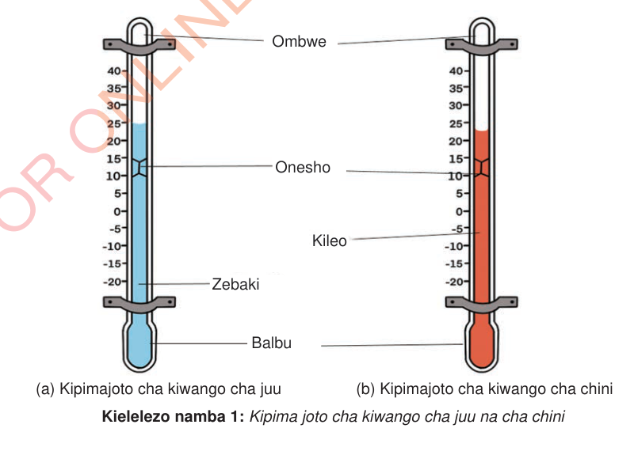

Kipimajoto cha kiwango cha juu
Kipimajoto hiki hutumika kuonesha kiwango cha joto cha juu zaidi cha siku, na mara nyingi husomwa wakati wa jioni. Ndani ya kipimajoto kuna zebaki inayosaidia kutoa matokeo sahihi. Endapo siku inakuwa na joto zaidi, zebaki hutanuka na kupanda juu kwenye kipimajoto. Hata kama joto litashuka baadaye, onesho linabaki kwenye kiwango cha juu, hivyo tunaweza kuona joto la juu zaidi la siku hiyo. Zebaki pia ina rangi hivyo ni rahisi kusoma. Hii ndiyo sababu zebaki hutumika katika kipimajoto cha kiwango cha juu.
Kipimajoto cha kiwango cha chini
Kipimajoto hiki kinaonesha kiwango cha chini cha joto, mara nyingi husomwa wakati wa usiku au asubuhi mapema. Kipimajoto hiki kina alkoholi (kileo) ndani yake chenye rangi kwa sababu inafanya kazi vizuri katika kupima kiwango cha chini cha joto. Alkoholi haiwezi kuganda kwa urahisi, hivyo kipimajoto kinaendelea kufanya kazi hata wakati wa baridi kali. Pia huenda juu na chini wakati joto linapobadilika, jambo linalosaidia kuonesha kiwango cha chini cha joto kilichopo. Pia alkoholi ina rangi ili tuweze kuiona kwa wazi ndani ya kipimajoto. Pia ni salama zaidi kutumia kuliko vitu vingine kama zebaki. Hii ndiyo sababu alkoholi yenye rangi hutumika katika kipimajoto cha kiwango cha chini. Kielelezo namba 1 kinawasilisha kipimajoto cha kiwango cha juu na kipimajoto cha kiwango cha chini.
